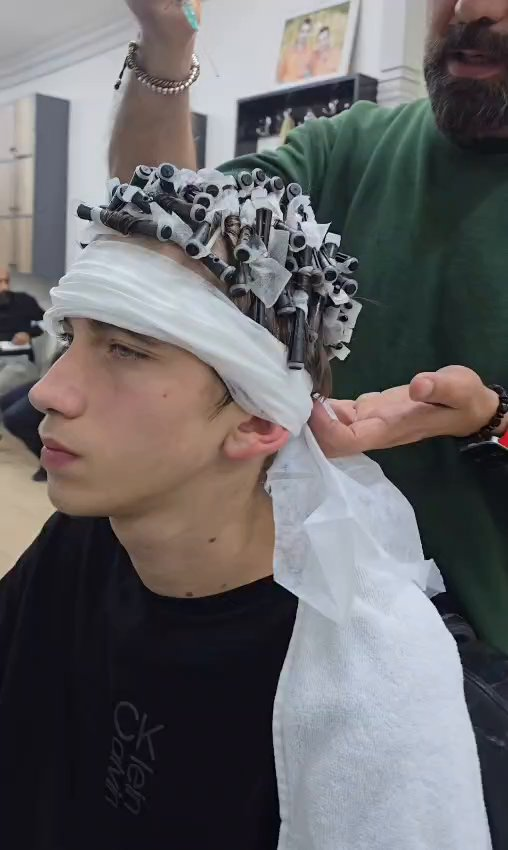
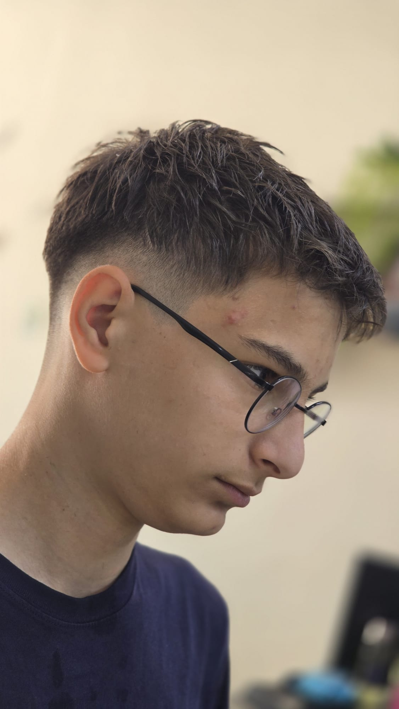
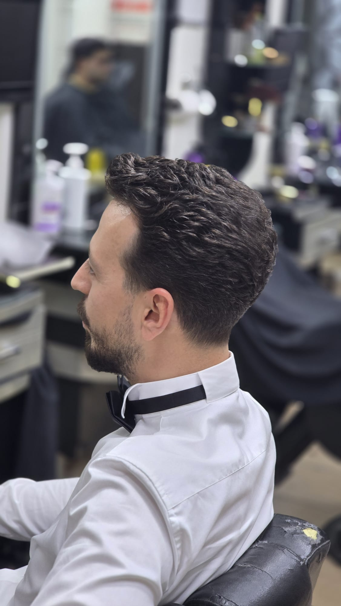

Salonumuzda gerçekleştirilen protez saç uygulamaları, saç-sakal dönüşümleri ve müşteri deneyimlerinin gerçek video ve fotoğrafları.









Resmi Instagram hesabımızda her gün en yeni protez saç uygulamaları, erkek perma dönüşümleri ve saç tasarım videolarını paylaşıyoruz.
Instagram'da Bizi Takip Edin